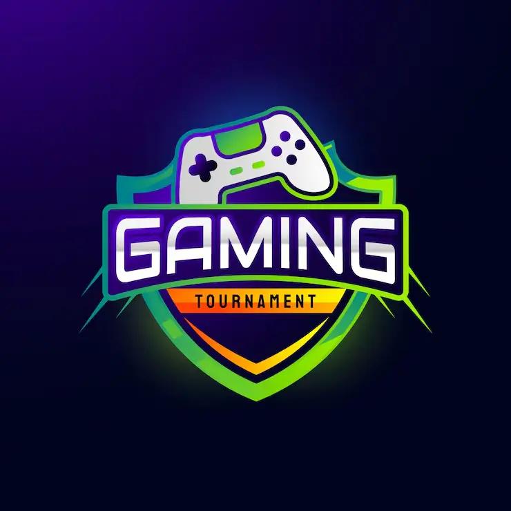

Los Juegos Friv
Los juegos Friv son una colección de miles de minijuegos educativos, de destreza y entretenimiento basados en el navegador, que se popularizaron de forma masiva en la década de los 2010 a través del sitio web Friv.com. A diferencia de los videojuegos tradicionales que requieren descargas o consolas, estos títulos destacan por sus mecánicas sencillas, accesibilidad inmediata y un diseño de interfaz único.
Los juegos Friv se dividen en una gran variedad de categorías diseñadas para cubrir todos los gustos y edades. Aunque originalmente el sitio oficial mostraba todo mezclado en una sola pantalla, su catálogo se clasifica en los siguientes tipos principales de juegos
